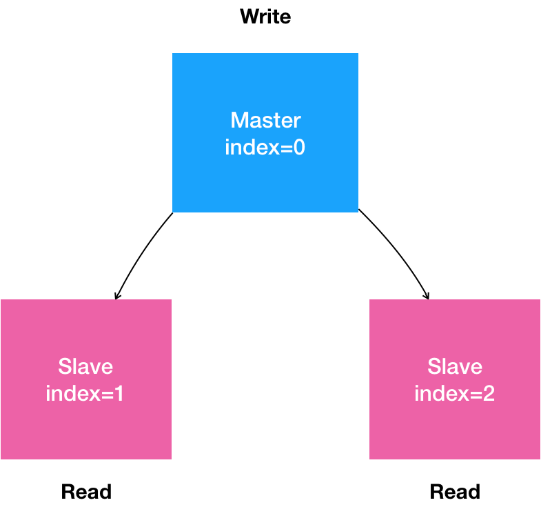
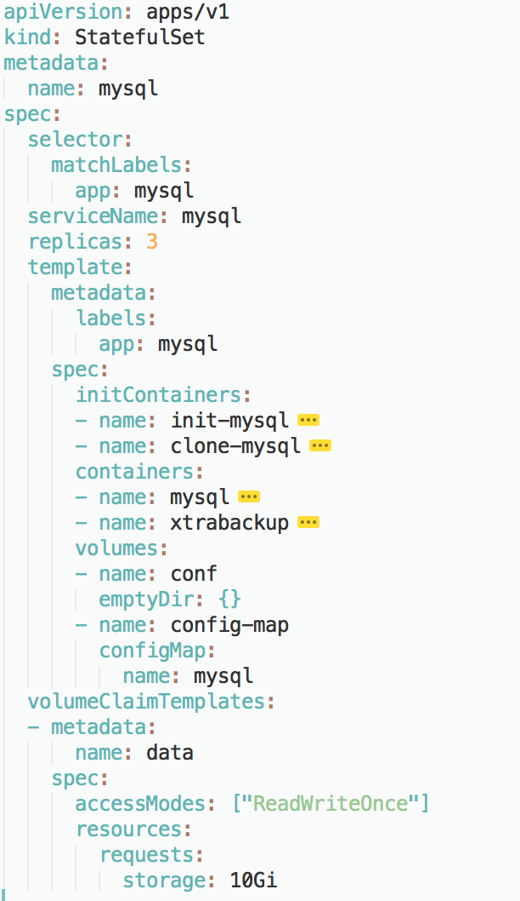

在前面的两篇文章中，我详细讲解了 StatefulSet 的工作原理，以及处理拓扑状态和存储状态的方法。而在今天这篇文章中，我将通过一个实际的例子，再次为你深入解读一下部署一个 StatefulSet 的完整流程。
今天我选择的实例是部署一个 MySQL 集群，这也是 Kubernetes 官方文档里的一个经典案例。但是，很多工程师都曾向我吐槽说这个例子 “完全看不懂”。
其实，这样的吐槽也可以理解：相比于 Etcd、Cassandra 等 “原生” 就考虑了分布式需求的项目，MySQL 以及很多其他的数据库项目，在分布式集群的搭建上并不友好，甚至有点 “原始”。
所以，这次我就直接选择了这个具有挑战性的例子，和你分享如何使用 StatefulSet 将它的集群搭建过程 “容器化”。
备注：在开始实践之前，请确保我们之前一起部署的那个 Kubernetes 集群还是可用的，并且网络插件和存储插件都能正常运行。具体的做法，请参考第 11 篇文章《从 0 到 1：搭建一个完整的 Kubernetes 集群》的内容。
首先，用自然语言来描述一下我们想要部署的 “有状态应用”。
- 是一个 “主从复制”（Maser-Slave Replication）的 MySQL 集群；
- 有 1 个主节点（Master）；
- 有多个从节点（Slave）；
- 从节点需要能水平扩展；
- 所有的写操作，只能在主节点上执行；
- 读操作可以在所有节点上执行。
这就是一个非常典型的主从模式的 MySQL 集群了。我们可以把上面描述的 “有状态应用” 的需求，通过一张图来表示。

在常规环境里，部署这样一个主从模式的 MySQL 集群的主要难点在于：如何让从节点能够拥有主节点的数据，即：如何配置主（Master）从（Slave）节点的复制与同步。
所以，在安装好 MySQL 的 Master 节点之后，你需要做的第一步工作，就是通过 XtraBackup 将 Master 节点的数据备份到指定目录。
备注：XtraBackup 是业界主要使用的开源 MySQL 备份和恢复工具。
这一步会自动在目标目录里生成一个备份信息文件，名叫：xtrabackup_binlog_info。这个文件一般会包含如下两个信息：
$ cat xtrabackup_binlog_info
TheMaster-bin.000001 481
这两个信息会在接下来配置 Slave 节点的时候用到。
第二步：配置 Slave 节点。Slave 节点在第一次启动前，需要先把 Master 节点的备份数据，连同备份信息文件，一起拷贝到自己的数据目录（/var/lib/mysql）下。然后，我们执行这样一句 SQL：
TheSlave|mysql> CHANGE MASTER TO
MASTER_HOST='$masterip',
MASTER_USER='xxx',
MASTER_PASSWORD='xxx',
MASTER_LOG_FILE='TheMaster-bin.000001',
MASTER_LOG_POS=481;
其中，MASTER_LOG_FILE 和 MASTER_LOG_POS，就是该备份对应的二进制日志（Binary Log）文件的名称和开始的位置（偏移量），也正是 xtrabackup_binlog_info 文件里的那两部分内容（即：TheMaster-bin.000001 和 481）。
第三步，启动 Slave 节点。在这一步，我们需要执行这样一句 SQL：
TheSlave|mysql> START SLAVE;
这样，Slave 节点就启动了。它会使用备份信息文件中的二进制日志文件和偏移量，与主节点进行数据同步。
第四步，在这个集群中添加更多的 Slave 节点。
需要注意的是，新添加的 Slave 节点的备份数据，来自于已经存在的 Slave 节点。
所以，在这一步，我们需要将 Slave 节点的数据备份在指定目录。而这个备份操作会自动生成另一种备份信息文件，名叫：xtrabackup_slave_info。同样地，这个文件也包含了 MASTER_LOG_FILE 和 MASTER_LOG_POS 两个字段。
然后，我们就可以执行跟前面一样的 “CHANGE MASTER TO” 和 “START SLAVE” 指令，来初始化并启动这个新的 Slave 节点了。
通过上面的叙述，我们不难看到，将部署 MySQL 集群的流程迁移到 Kubernetes 项目上，需要能够 “容器化” 地解决下面的 “三座大山”：
- Master 节点和 Slave 节点需要有不同的配置文件（即：不同的 my.cnf）；
- Master 节点和 Salve 节点需要能够传输备份信息文件；
- 在 Slave 节点第一次启动之前，需要执行一些初始化 SQL 操作；
而由于 MySQL 本身同时拥有拓扑状态（主从节点的区别）和存储状态（MySQL 保存在本地的数据），我们自然要通过 StatefulSet 来解决这 “三座大山” 的问题。
其中，“第一座大山：Master 节点和 Slave 节点需要有不同的配置文件”，很容易处理：我们只需要给主从节点分别准备两份不同的 MySQL 配置文件，然后根据 Pod 的序号（Index）挂载进去即可。
正如我在前面文章中介绍过的，这样的配置文件信息，应该保存在 ConfigMap 里供 Pod 使用。它的定义如下所示：
apiVersion: v1
kind: ConfigMap
metadata:
name: mysql
labels:
app: mysql
data:
master.cnf: |
# 主节点 MySQL 的配置文件
[mysqld]
log-bin
slave.cnf: |
# 从节点 MySQL 的配置文件
[mysqld]
super-read-only
在这里，我们定义了 master.cnf 和 slave.cnf 两个 MySQL 的配置文件。
- master.cnf 开启了 log-bin，即：使用二进制日志文件的方式进行主从复制，这是一个标准的设置。
- slave.cnf 的开启了 super-read-only，代表的是从节点会拒绝除了主节点的数据同步操作之外的所有写操作，即：它对用户是只读的。
而上述 ConfigMap 定义里的 data 部分，是 Key-Value 格式的。比如，master.cnf 就是这份配置数据的 Key，而 “|” 后面的内容，就是这份配置数据的 Value。这份数据将来挂载进 Master 节点对应的 Pod 后，就会在 Volume 目录里生成一个叫作 master.cnf 的文件。
备注：如果你对 ConfigMap 的用法感到陌生的话，可以稍微复习一下第 15 篇文章《深入解析 Pod 对象（二）：使用进阶》中，我讲解 Secret 对象部分的内容。因为，ConfigMap 跟 Secret，无论是使用方法还是实现原理，几乎都是一样的。
接下来，我们需要创建两个 Service 来供 StatefulSet 以及用户使用。这两个 Service 的定义如下所示：
apiVersion: v1
kind: Service
metadata:
name: mysql
labels:
app: mysql
spec:
ports:
- name: mysql
port: 3306
clusterIP: None
selector:
app: mysql
---
apiVersion: v1
kind: Service
metadata:
name: mysql-read
labels:
app: mysql
spec:
ports:
- name: mysql
port: 3306
selector:
app: mysql
可以看到，这两个 Service 都代理了所有携带 app=mysql 标签的 Pod，也就是所有的 MySQL Pod。端口映射都是用 Service 的 3306 端口对应 Pod 的 3306 端口。
不同的是，第一个名叫 “mysql” 的 Service 是一个 Headless Service（即：clusterIP= None）。所以它的作用，是通过为 Pod 分配 DNS 记录来固定它的拓扑状态，比如 “mysql-0.mysql” 和 “mysql-1.mysql” 这样的 DNS 名字。其中，编号为 0 的节点就是我们的主节点。
而第二个名叫 “mysql-read” 的 Service，则是一个常规的 Service。
并且我们规定，所有用户的读请求，都必须访问第二个 Service 被自动分配的 DNS 记录，即：“mysql-read”（当然，也可以访问这个 Service 的 VIP）。这样，读请求就可以被转发到任意一个 MySQL 的主节点或者从节点上。
备注：Kubernetes 中的所有 Service、Pod 对象，都会被自动分配同名的 DNS 记录。具体细节，我会在后面 Service 部分做重点讲解。
而所有用户的写请求，则必须直接以 DNS 记录的方式访问到 MySQL 的主节点，也就是：“mysql-0.mysql“这条 DNS 记录。
接下来，我们再一起解决 “第二座大山：Master 节点和 Salve 节点需要能够传输备份文件” 的问题。
翻越这座大山的思路，我比较推荐的做法是：先搭建框架，再完善细节。其中，Pod 部分如何定义，是完善细节时的重点。
所以首先，我们先为 StatefulSet 对象规划一个大致的框架，如下图所示：

在这一步，我们可以先为 StatefulSet 定义一些通用的字段。
比如：selector 表示，这个 StatefulSet 要管理的 Pod 必须携带 app=mysql 标签；它声明要使用的 Headless Service 的名字是：mysql。
这个 StatefulSet 的 replicas 值是 3，表示它定义的 MySQL 集群有三个节点：一个 Master 节点，两个 Slave 节点。
可以看到，StatefulSet 管理的 “有状态应用” 的多个实例，也都是通过同一份 Pod 模板创建出来的，使用的是同一个 Docker 镜像。这也就意味着：如果你的应用要求不同节点的镜像不一样，那就不能再使用 StatefulSet 了。对于这种情况，应该考虑我后面会讲解到的 Operator。
除了这些基本的字段外，作为一个有存储状态的 MySQL 集群，StatefulSet 还需要管理存储状态。所以，我们需要通过 volumeClaimTemplate（PVC 模板）来为每个 Pod 定义 PVC。比如，这个 PVC 模板的 resources.requests.strorage 指定了存储的大小为 10 GiB；ReadWriteOnce 指定了该存储的属性为可读写，并且一个 PV 只允许挂载在一个宿主机上。将来，这个 PV 对应的的 Volume 就会充当 MySQL Pod 的存储数据目录。
然后，我们来重点设计一下这个 StatefulSet 的 Pod 模板，也就是 template 字段。
由于 StatefulSet 管理的 Pod 都来自于同一个镜像，这就要求我们在编写 Pod 时，一定要保持清醒，用 “人格分裂” 的方式进行思考：
- 如果这个 Pod 是 Master 节点，我们要怎么做；
- 如果这个 Pod 是 Slave 节点，我们又要怎么做。
想清楚这两个问题，我们就可以按照 Pod 的启动过程来一步步定义它们了。
第一步：从 ConfigMap 中，获取 MySQL 的 Pod 对应的配置文件。
为此，我们需要进行一个初始化操作，根据节点的角色是 Master 还是 Slave 节点，为 Pod 分配对应的配置文件。此外，MySQL 还要求集群里的每个节点都有一个唯一的 ID 文件，名叫 server-id.cnf。
而根据我们已经掌握的 Pod 知识，这些初始化操作显然适合通过 InitContainer 来完成。所以，我们首先定义了一个 InitContainer，如下所示：
...
# template.spec
initContainers:
- name: init-mysql
image: mysql:5.7
command:
- bash
- "-c"
- |
set -ex
# 从 Pod 的序号，生成 server-id
[[ `hostname` =~ -([0-9]+)$ ]] || exit 1
ordinal=${BASH_REMATCH[1]}
echo [mysqld] > /mnt/conf.d/server-id.cnf
# 由于 server-id=0 有特殊含义，我们给 ID 加一个 100 来避开它
echo server-id=$((100 + $ordinal)) >> /mnt/conf.d/server-id.cnf
# 如果 Pod 序号是 0，说明它是 Master 节点，从 ConfigMap 里把 Master 的配置文件拷贝到 /mnt/conf.d/ 目录；
# 否则，拷贝 Slave 的配置文件
if [[ $ordinal -eq 0 ]]; then
cp /mnt/config-map/master.cnf /mnt/conf.d/
else
cp /mnt/config-map/slave.cnf /mnt/conf.d/
fi
volumeMounts:
- name: conf
mountPath: /mnt/conf.d
- name: config-map
mountPath: /mnt/config-map
在这个名叫 init-mysql 的 InitContainer 的配置中，它从 Pod 的 hostname 里，读取到了 Pod 的序号，以此作为 MySQL 节点的 server-id。
然后，init-mysql 通过这个序号，判断当前 Pod 到底是 Master 节点（即：序号为 0）还是 Slave 节点（即：序号不为 0），从而把对应的配置文件从 /mnt/config-map 目录拷贝到 /mnt/conf.d/ 目录下。
其中，文件拷贝的源目录 /mnt/config-map，正是 ConfigMap 在这个 Pod 的 Volume，如下所示：
...
# template.spec
volumes:
- name: conf
emptyDir: {}
- name: config-map
configMap:
name: mysql
通过这个定义，init-mysql 在声明了挂载 config-map 这个 Volume 之后，ConfigMap 里保存的内容，就会以文件的方式出现在它的 /mnt/config-map 目录当中。
而文件拷贝的目标目录，即容器里的 /mnt/conf.d/ 目录，对应的则是一个名叫 conf 的、emptyDir 类型的 Volume。基于 Pod Volume 共享的原理，当 InitContainer 复制完配置文件退出后，后面启动的 MySQL 容器只需要直接声明挂载这个名叫 conf 的 Volume，它所需要的.cnf 配置文件已经出现在里面了。这跟我们之前介绍的 Tomcat 和 WAR 包的处理方法是完全一样的。
第二步：在 Slave Pod 启动前，从 Master 或者其他 Slave Pod 里拷贝数据库数据到自己的目录下。
为了实现这个操作，我们就需要再定义第二个 InitContainer，如下所示：
...
# template.spec.initContainers
- name: clone-mysql
image: gcr.io/google-samples/xtrabackup:1.0
command:
- bash
- "-c"
- |
set -ex
# 拷贝操作只需要在第一次启动时进行，所以如果数据已经存在，跳过
[[ -d /var/lib/mysql/mysql ]] && exit 0
# Master 节点 (序号为 0) 不需要做这个操作
[[ `hostname` =~ -([0-9]+)$ ]] || exit 1
ordinal=${BASH_REMATCH[1]}
[[ $ordinal -eq 0 ]] && exit 0
# 使用 ncat 指令，远程地从前一个节点拷贝数据到本地
ncat --recv-only mysql-$(($ordinal-1)).mysql 3307 | xbstream -x -C /var/lib/mysql
# 执行 --prepare，这样拷贝来的数据就可以用作恢复了
xtrabackup --prepare --target-dir=/var/lib/mysql
volumeMounts:
- name: data
mountPath: /var/lib/mysql
subPath: mysql
- name: conf
mountPath: /etc/mysql/conf.d
在这个名叫 clone-mysql 的 InitContainer 里，我们使用的是 xtrabackup 镜像（它里面安装了 xtrabackup 工具）。
而在它的启动命令里，我们首先做了一个判断。即：当初始化所需的数据（/var/lib/mysql/mysql 目录）已经存在，或者当前 Pod 是 Master 节点的时候，不需要做拷贝操作。
接下来，clone-mysql 会使用 Linux 自带的 ncat 指令，向 DNS 记录为 “mysql-< 当前序号减一>.mysql” 的 Pod，也就是当前 Pod 的前一个 Pod，发起数据传输请求，并且直接用 xbstream 指令将收到的备份数据保存在 /var/lib/mysql 目录下。
备注：3307 是一个特殊端口，运行着一个专门负责备份 MySQL 数据的辅助进程。我们后面马上会讲到它。
当然，这一步你可以随意选择用自己喜欢的方法来传输数据。比如，用 scp 或者 rsync，都没问题。
你可能已经注意到，这个容器里的 /var/lib/mysql 目录，实际上正是一个名为 data 的 PVC，即：我们在前面声明的持久化存储。
这就可以保证，哪怕宿主机宕机了，我们数据库的数据也不会丢失。更重要的是，由于 Pod Volume 是被 Pod 里的容器共享的，所以后面启动的 MySQL 容器，就可以把这个 Volume 挂载到自己的 /var/lib/mysql 目录下，直接使用里面的备份数据进行恢复操作。
不过，clone-mysql 容器还要对 /var/lib/mysql 目录，执行一句 xtrabackup --prepare 操作，目的是让拷贝来的数据进入一致性状态，这样，这些数据才能被用作数据恢复。
至此，我们就通过 InitContainer 完成了对 “主、从节点间备份文件传输” 操作的处理过程，也就是翻越了 “第二座大山”。
接下来，我们可以开始定义 MySQL 容器，启动 MySQL 服务了。由于 StatefulSet 里的所有 Pod 都来自用同一个 Pod 模板，所以我们还要 “人格分裂” 地去思考：这个 MySQL 容器的启动命令，在 Master 和 Slave 两种情况下有什么不同。
有了 Docker 镜像，在 Pod 里声明一个 Master 角色的 MySQL 容器并不是什么困难的事情：直接执行 MySQL 启动命令即可。
但是，如果这个 Pod 是一个第一次启动的 Slave 节点，在执行 MySQL 启动命令之前，它就需要使用前面 InitContainer 拷贝来的备份数据进行初始化。
可是，别忘了，容器是一个单进程模型。
所以，一个 Slave 角色的 MySQL 容器启动之前，谁能负责给它执行初始化的 SQL 语句呢？
这就是我们需要解决的 “第三座大山” 的问题，即：如何在 Slave 节点的 MySQL 容器第一次启动之前，执行初始化 SQL。
你可能已经想到了，我们可以为这个 MySQL 容器额外定义一个 sidecar 容器，来完成这个操作，它的定义如下所示：
...
# template.spec.containers
- name: xtrabackup
image: gcr.io/google-samples/xtrabackup:1.0
ports:
- name: xtrabackup
containerPort: 3307
command:
- bash
- "-c"
- |
set -ex
cd /var/lib/mysql
# 从备份信息文件里读取 MASTER_LOG_FILEM 和 MASTER_LOG_POS 这两个字段的值，用来拼装集群初始化 SQL
if [[ -f xtrabackup_slave_info ]]; then
# 如果 xtrabackup_slave_info 文件存在，说明这个备份数据来自于另一个 Slave 节点。这种情况下，XtraBackup 工具在备份的时候，就已经在这个文件里自动生成了 "CHANGE MASTER TO" SQL 语句。所以，我们只需要把这个文件重命名为 change_master_to.sql.in，后面直接使用即可
mv xtrabackup_slave_info change_master_to.sql.in
# 所以，也就用不着 xtrabackup_binlog_info 了
rm -f xtrabackup_binlog_info
elif [[ -f xtrabackup_binlog_info ]]; then
# 如果只存在 xtrabackup_binlog_inf 文件，那说明备份来自于 Master 节点，我们就需要解析这个备份信息文件，读取所需的两个字段的值
[[ `cat xtrabackup_binlog_info` =~ ^(.*?)[[:space:]]+(.*?)$ ]] || exit 1
rm xtrabackup_binlog_info
# 把两个字段的值拼装成 SQL，写入 change_master_to.sql.in 文件
echo "CHANGE MASTER TO MASTER_LOG_FILE='${BASH_REMATCH[1]}',\
MASTER_LOG_POS=${BASH_REMATCH[2]}" > change_master_to.sql.in
fi
# 如果 change_master_to.sql.in，就意味着需要做集群初始化工作
if [[ -f change_master_to.sql.in ]]; then
# 但一定要先等 MySQL 容器启动之后才能进行下一步连接 MySQL 的操作
echo "Waiting for mysqld to be ready (accepting connections)"
until mysql -h 127.0.0.1 -e "SELECT 1"; do sleep 1; done
echo "Initializing replication from clone position"
# 将文件 change_master_to.sql.in 改个名字，防止这个 Container 重启的时候，因为又找到了 change_master_to.sql.in，从而重复执行一遍这个初始化流程
mv change_master_to.sql.in change_master_to.sql.orig
# 使用 change_master_to.sql.orig 的内容，也是就是前面拼装的 SQL，组成一个完整的初始化和启动 Slave 的 SQL 语句
mysql -h 127.0.0.1 <<EOF
$(<change_master_to.sql.orig),
MASTER_HOST='mysql-0.mysql',
MASTER_USER='root',
MASTER_PASSWORD='',
MASTER_CONNECT_RETRY=10;
START SLAVE;
EOF
fi
# 使用 ncat 监听 3307 端口。它的作用是，在收到传输请求的时候，直接执行 "xtrabackup --backup" 命令，备份 MySQL 的数据并发送给请求者
exec ncat --listen --keep-open --send-only --max-conns=1 3307 -c \
"xtrabackup --backup --slave-info --stream=xbstream --host=127.0.0.1 --user=root"
volumeMounts:
- name: data
mountPath: /var/lib/mysql
subPath: mysql
- name: conf
mountPath: /etc/mysql/conf.d
可以看到，在这个名叫 xtrabackup 的 sidecar 容器的启动命令里，其实实现了两部分工作。
第一部分工作，当然是 MySQL 节点的初始化工作。这个初始化需要使用的 SQL，是 sidecar 容器拼装出来、保存在一个名为 change_master_to.sql.in 的文件里的，具体过程如下所示：
sidecar 容器首先会判断当前 Pod 的 /var/lib/mysql 目录下，是否有 xtrabackup_slave_info 这个备份信息文件。
如果有，则说明这个目录下的备份数据是由一个 Slave 节点生成的。这种情况下，XtraBackup 工具在备份的时候，就已经在这个文件里自动生成了 "CHANGE MASTER TO" SQL 语句。所以，我们只需要把这个文件重命名为 change_master_to.sql.in，后面直接使用即可。
如果没有 xtrabackup_slave_info 文件、但是存在 xtrabackup_binlog_info 文件，那就说明备份数据来自于 Master 节点。这种情况下，sidecar 容器就需要解析这个备份信息文件，读取 MASTER_LOG_FILE 和 MASTER_LOG_POS 这两个字段的值，用它们拼装出初始化 SQL 语句，然后把这句 SQL 写入到 change_master_to.sql.in 文件中。
接下来，sidecar 容器就可以执行初始化了。从上面的叙述中可以看到，只要这个 change_master_to.sql.in 文件存在，那就说明接下来需要进行集群初始化操作。
所以，这时候，sidecar 容器只需要读取并执行 change_master_to.sql.in 里面的 “CHANGE MASTER TO” 指令，再执行一句 START SLAVE 命令，一个 Slave 节点就被成功启动了。
需要注意的是：Pod 里的容器并没有先后顺序，所以在执行初始化 SQL 之前，必须先执行一句 SQL（select 1）来检查一下 MySQL 服务是否已经可用。
当然，上述这些初始化操作完成后，我们还要删除掉前面用到的这些备份信息文件。否则，下次这个容器重启时，就会发现这些文件存在，所以又会重新执行一次数据恢复和集群初始化的操作，这是不对的。
同理，change_master_to.sql.in 在使用后也要被重命名，以免容器重启时因为发现这个文件存在又执行一遍初始化。
在完成 MySQL 节点的初始化后，这个 sidecar 容器的第二个工作，则是启动一个数据传输服务。
具体做法是：sidecar 容器会使用 ncat 命令启动一个工作在 3307 端口上的网络发送服务。一旦收到数据传输请求时，sidecar 容器就会调用 xtrabackup --backup 指令备份当前 MySQL 的数据，然后把这些备份数据返回给请求者。这就是为什么我们在 InitContainer 里定义数据拷贝的时候，访问的是 “上一个 MySQL 节点” 的 3307 端口。
值得一提的是，由于 sidecar 容器和 MySQL 容器同处于一个 Pod 里，所以它是直接通过 Localhost 来访问和备份 MySQL 容器里的数据的，非常方便。
同样地，我在这里举例用的只是一种备份方法而已，你完全可以选择其他自己喜欢的方案。比如，你可以使用 innobackupex 命令做数据备份和准备，它的使用方法几乎与本文的备份方法一样。
至此，我们也就翻越了 “第三座大山”，完成了 Slave 节点第一次启动前的初始化工作。
扳倒了这 “三座大山” 后，我们终于可以定义 Pod 里的主角，MySQL 容器了。有了前面这些定义和初始化工作，MySQL 容器本身的定义就非常简单了，如下所示：
...
# template.spec
containers:
- name: mysql
image: mysql:5.7
env:
- name: MYSQL_ALLOW_EMPTY_PASSWORD
value: "1"
ports:
- name: mysql
containerPort: 3306
volumeMounts:
- name: data
mountPath: /var/lib/mysql
subPath: mysql
- name: conf
mountPath: /etc/mysql/conf.d
resources:
requests:
cpu: 500m
memory: 1Gi
livenessProbe:
exec:
command: ["mysqladmin", "ping"]
initialDelaySeconds: 30
periodSeconds: 10
timeoutSeconds: 5
readinessProbe:
exec:
# 通过 TCP 连接的方式进行健康检查
command: ["mysql", "-h", "127.0.0.1", "-e", "SELECT 1"]
initialDelaySeconds: 5
periodSeconds: 2
timeoutSeconds: 1
在这个容器的定义里，我们使用了一个标准的 MySQL 5.7 的官方镜像。它的数据目录是 /var/lib/mysql，配置文件目录是 /etc/mysql/conf.d。
这时候，你应该能够明白，如果 MySQL 容器是 Slave 节点的话，它的数据目录里的数据，就来自于 InitContainer 从其他节点里拷贝而来的备份。它的配置文件目录 /etc/mysql/conf.d 里的内容，则来自于 ConfigMap 对应的 Volume。而它的初始化工作，则是由同一个 Pod 里的 sidecar 容器完成的。这些操作，正是我刚刚为你讲述的大部分内容。
另外，我们为它定义了一个 livenessProbe，通过 mysqladmin ping 命令来检查它是否健康；还定义了一个 readinessProbe，通过查询 SQL（select 1）来检查 MySQL 服务是否可用。当然，凡是 readinessProbe 检查失败的 MySQL Pod，都会从 Service 里被摘除掉。
至此，一个完整的主从复制模式的 MySQL 集群就定义完了。
现在，我们就可以使用 kubectl 命令，尝试运行一下这个 StatefulSet 了。
首先，我们需要在 Kubernetes 集群里创建满足条件的 PV。如果你使用的是我们在第 11 篇文章《从 0 到 1：搭建一个完整的 Kubernetes 集群》里部署的 Kubernetes 集群的话，你可以按照如下方式使用存储插件 Rook：
$ kubectl create -f rook-storage.yaml
$ cat rook-storage.yaml
apiVersion: ceph.rook.io/v1beta1
kind: Pool
metadata:
name: replicapool
namespace: rook-ceph
spec:
replicated:
size: 3
---
apiVersion: storage.k8s.io/v1
kind: StorageClass
metadata:
name: rook-ceph-block
provisioner: ceph.rook.io/block
parameters:
pool: replicapool
clusterNamespace: rook-ceph
在这里，我用到了 StorageClass 来完成这个操作。它的作用，是自动地为集群里存在的每一个 PVC，调用存储插件（Rook）创建对应的 PV，从而省去了我们手动创建 PV 的机械劳动。我在后续讲解容器存储的时候，会再详细介绍这个机制。
备注：在使用 Rook 的情况下，mysql-statefulset.yaml 里的 volumeClaimTemplates 字段需要加上声明 storageClassName=rook-ceph-block，才能使用到这个 Rook 提供的持久化存储。
然后，我们就可以创建这个 StatefulSet 了，如下所示：
$ kubectl create -f mysql-statefulset.yaml
$ kubectl get pod -l app=mysql
NAME READY STATUS RESTARTS AGE
mysql-0 2/2 Running 0 2m
mysql-1 2/2 Running 0 1m
mysql-2 2/2 Running 0 1m
可以看到，StatefulSet 启动成功后，会有三个 Pod 运行。
接下来，我们可以尝试向这个 MySQL 集群发起请求，执行一些 SQL 操作来验证它是否正常：
$ kubectl run mysql-client --image=mysql:5.7 -i --rm --restart=Never --\
mysql -h mysql-0.mysql <<EOF
CREATE DATABASE test;
CREATE TABLE test.messages (message VARCHAR(250));
INSERT INTO test.messages VALUES ('hello');
EOF
如上所示，我们通过启动一个容器，使用 MySQL client 执行了创建数据库和表、以及插入数据的操作。需要注意的是，我们连接的 MySQL 的地址必须是 mysql-0.mysql（即：Master 节点的 DNS 记录）。因为，只有 Master 节点才能处理写操作。
而通过连接 mysql-read 这个 Service，我们就可以用 SQL 进行读操作，如下所示：
$ kubectl run mysql-client --image=mysql:5.7 -i -t --rm --restart=Never --\
mysql -h mysql-read -e "SELECT * FROM test.messages"
Waiting for pod default/mysql-client to be running, status is Pending, pod ready: false
+---------+
| message |
+---------+
| hello |
+---------+
pod "mysql-client" deleted
在有了 StatefulSet 以后，你就可以像 Deployment 那样，非常方便地扩展这个 MySQL 集群，比如：
$ kubectl scale statefulset mysql --replicas=5
这时候，你就会发现新的 Slave Pod mysql-3 和 mysql-4 被自动创建了出来。
而如果你像如下所示的这样，直接连接 mysql-3.mysql，即 mysql-3 这个 Pod 的 DNS 名字来进行查询操作：
$ kubectl run mysql-client --image=mysql:5.7 -i -t --rm --restart=Never --\
mysql -h mysql-3.mysql -e "SELECT * FROM test.messages"
Waiting for pod default/mysql-client to be running, status is Pending, pod ready: false
+---------+
| message |
+---------+
| hello |
+---------+
pod "mysql-client" deleted
就会看到，从 StatefulSet 为我们新创建的 mysql-3 上，同样可以读取到之前插入的记录。也就是说，我们的数据备份和恢复，都是有效的。
总结
在今天这篇文章中，我以 MySQL 集群为例，和你详细分享了一个实际的 StatefulSet 的编写过程。这个 YAML 文件的链接在这里，希望你能多花一些时间认真消化。
在这个过程中，有以下几个关键点（坑）特别值得你注意和体会。
- “人格分裂”：在解决需求的过程中，一定要记得思考，该 Pod 在扮演不同角色时的不同操作。
- “阅后即焚”：很多 “有状态应用” 的节点，只是在第一次启动的时候才需要做额外处理。所以，在编写 YAML 文件时，你一定要考虑 “容器重启” 的情况，不要让这一次的操作干扰到下一次的容器启动。
- “容器之间平等无序”：除非是 InitContainer，否则一个 Pod 里的多个容器之间，是完全平等的。所以，你精心设计的 sidecar，绝不能对容器的顺序做出假设，否则就需要进行前置检查。
最后，相信你也已经能够理解，StatefulSet 其实是一种特殊的 Deployment，只不过这个 “Deployment” 的每个 Pod 实例的名字里，都携带了一个唯一并且固定的编号。这个编号的顺序，固定了 Pod 的拓扑关系；这个编号对应的 DNS 记录，固定了 Pod 的访问方式；这个编号对应的 PV，绑定了 Pod 与持久化存储的关系。所以，当 Pod 被删除重建时，这些 “状态” 都会保持不变。
而一旦你的应用没办法通过上述方式进行状态的管理，那就代表了 StatefulSet 已经不能解决它的部署问题了。这时候，我后面讲到的 Operator，可能才是一个更好的选择。
思考题
如果我们现在的需求是：所有的读请求，只由 Slave 节点处理；所有的写请求，只由 Master 节点处理。那么，你需要在今天这篇文章的基础上再做哪些改动呢？